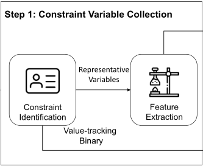
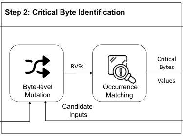
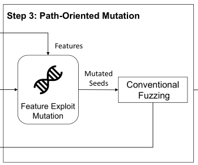

基于推理的污点分析路径感知方法。
- 沿着执行路径将表示程序状态的约束变量收集到代表变量序列（RVS）。其中难点是如何合理地追踪代表变量，在不影响分析精度的前提下，采用合理的策略跟踪所有变量的抽样子集。
- 为每个变量出现标识相应的关键字节。在推理过程中，模糊器扰动输入的每个字节，监视变量出现的值的变化，以此识别关键字节。其中难点是如何选择匹配算法来正确匹配变化路径之间的变量，当执行路径更改时，正确匹配变量的出现。
- 利用路径感知污点分析的结果来指导模糊器的突变过程。其中难点是如何选择突变策略来有效地利用分析结果探索沿着原始路径的其他分支。
PATA的解决方案：
- 通过搜索将范围缩小到对约束有高影响的变量，并通过回溯增加对输入字节的敏感性，以此沿着路径收集约束变量。
- 通过从路径中提取给定变量的子序列，匹配变量并且比较扰动前后的值来识别关键字节。
- 通过利用面向路径的突变，有效地利用分析结果突变关键字节。尝试探索给定执行路径中的每个未被发现的分支。利用变量的值和特性，在关键字节上选择合适的突变方法，绕过约束。
PATA的设计

第一步：PATA通过识别代表性约束变量和仪表化程序来收集约束变量，收集路径并构建代表变量序列，提取每个变量的相关特征。

第二步：PATA通过字节级突变和出现匹配来识别关键字节。在字节级突变中，它收集由不同运行出现的变量组成的代表变量序列，PATA通过扰动输入的代表变量序列与原始输入的代表变量序列进行匹配来为每个变量的出现标识相应的关键字节。

第三步：PATA进行了面向路径的突变。在代表变量序列的每个条目中，使用每次出现的关键字节，结合值和详细特性。PATA选择适当的突变方法来绕过约束。最后，将变异的种子传递给常规的模糊处理，以探索程序状态并发现新的bug。
评估
测试：Google’s fuzzer-test-suite、LAVA-M和GitHub开源项目
评估指标：
- 执行的路径数量
- 覆盖的基本块
- 触发的bug
主流污点分析技术
基于传播的污点分析：通过不同的标签污染输入的每个字节，在程序执行期间传播这些标签。
基于推理的污点分析：反复扰动输入字节，并在程序执行期间收集变量的值。如果一个变量的值发生了变化，那么受干扰的字节和这个变量之间就存在数据依赖关系。